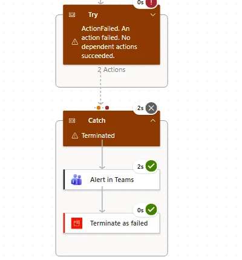

- Power Automate
- Level 4 · Reliable flows · 7 of 7
Error alerts and Terminate
The try / catch pattern stops failures from going unnoticed inside the flow. Two more pieces finish the job: an alert that reaches a person with a direct link to the failed run, and Terminate, which sets the run's final status so monitoring shows it as failed.
The demo flow

The alert

The link is built from the workflow() function, so it works in any environment without changes:
https://make.powerautomate.com/environments/@{workflow()?['tags']?['environmentName']}/flows/@{workflow()?['name']}/runs/@{workflow()?['run']?['name']}| Piece | Returns |
|---|---|
workflow()?['tags']?['environmentName'] | The environment ID |
workflow()?['name'] | The flow's ID |
workflow()?['run']?['name'] | This run's ID |
workflow()?['tags']?['flowDisplayName'] | The flow's name, for the message text |
Terminate


Terminate has three statuses: Failed (with your own error code and message), Cancelled, and Succeeded (end early because there's nothing more to do). Compare this with the try / catch article, where the same failure ended as Succeeded because nothing marked it as failed.
New to this? Start from the basics optional
workflow(): an expression with details about the current flow and run: IDs, names and environment.
Run status: what monitoring, run history and admin reports see. Make it honest.
Alert fatigue: people ignore alerts that fire too often. Alert on real failures only, and say what to do.
Build it step by step optional
- Build the Try / Catch scopes from the earlier article.
- Inside Catch, add Post message in a chat or channel (or Send an email) with the flow name, the failed step and a link using the workflow() expression above.
- After the alert, add Terminate: Status Failed, Code a short name such as OrderValidationFailed, Message a sentence a person can understand.
- Make Try fail on purpose and test.
- Check three things: the alert arrived, the link opens the run, and run history shows Failed.
Business errors and system errors
Larger solutions sort every failure into one of two kinds, because each needs a different response:
| Business exception (BE) | System exception (SE) | |
|---|---|---|
| Cause | The data breaks a rule: a missing amount, an unknown product, a duplicate | Something technical failed: a connector is down, a timeout, no permission |
| Retry? | No. The same data fails again. | Yes, often. It may work in a few minutes. |
| Who is told | The business user who owns the request | The support team |
| Example code | BE001 Amount missing | SE001 Connector unavailable |
Keep the codes and their messages in a SharePoint list or a JSON environment variable. In the Catch scope, decide the code (a Condition on the error message, or a validation step that already set it), look up the message, send it to the right people, log it, and end with Terminate using that code. Reports can then count failures by code instead of reading raw error text.
Common mistakes
- Sending alerts to the flow owner's personal inbox. Use a team channel or shared mailbox so alerts outlive job changes.
- Terminate as Succeeded inside Catch. The failure disappears from every report.
- Putting actions after Terminate. Nothing after it runs.